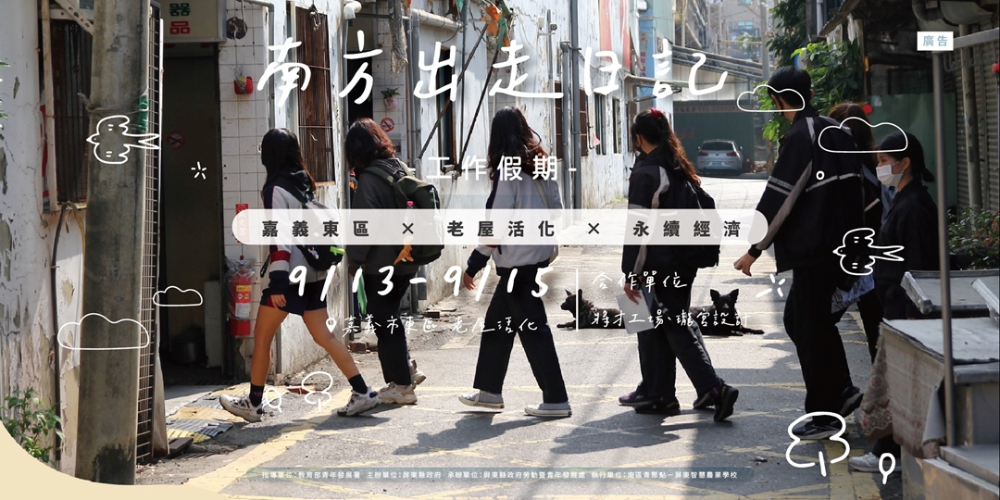

南方出走日記 I'm Off Then|老屋活化 × 永續經濟 x 工作假期
南區青聚點 × 老屋活化 × 永續經濟
走入嘉義市，想到的是什麼呢?
你想帶走的風景、人文又是什麼?
在嘉義二通有一些故事，
等你來挖掘!
以工換酬，將收穫到
深度體驗嘉義老屋
擁有小木作紀念品
認識志同道合的夥伴
增加老屋修建技能
一件今年限定南方出走紀念T
一張專屬結業證書
活動資訊
時間：2024/09/13 (五）09:40 - 09/15(日）17:00
地點：嘉義市東區
合作單位：將才工場、瓏宮設計
對象：18歲以上至45歲以內。 對老屋活化、體驗經濟、木都文化有興趣， 以街區感受、走讀踏查、勞動體驗的方式更了解「閒置空間再運用」， 讓職人匠師帶領學員透過走讀體驗，一同工作、一起勞動去。
費⽤：500元 (原價：6800元)（包含三天兩夜住宿、三天餐食、講師、材料費、保險、交通接駁...等）
交通資訊：交通資訊：統一在“嘉義火車站” 9:30 集合 ，步行前往目的地。
活動流程
| 9/13 (五) |
嘉義市木都文化：嘉義老屋魅力談 手作溫度小木作：小木作ＤＩＹ 生活感走讀散策：深度走讀二通街 嘉義夜生活美食：吃透文化夜市 |
| 9/14 (六) |
老屋製造的原點：帶入老屋空間介紹 打造老屋新起點：共同打造老屋空間 南青走讀交換所：青年小聚交流 嘉義老饕的最愛：當地特色熱炒店 |
| 9/15 (日) |
老屋的新風貌：老屋活化共創發想 南方交換日記本：分享假期心得 |